RISCFORGE 1TOPS · CJ current documentation review · 11 November 2026
Core, CSR and interrupt architecture
A source-traced snapshot of the active pipeline, memory boundary and thirteen-source interrupt controller. Architecture decisions and qualification remain open.
Review snapshot, not technical signoff. Static source and retained-evidence inspection only. No RTL/TB changes or new simulation. Detailed Markdown source contains the full contracts, limitations and next actions.
1. Implementation is not an approved freeze
Five-stage RV32IM/Zicsr path; machine-only execution, no compressed decoder.
ISA policy, M-only CSR semantics, precise effects, nesting and PLIC/CLINT/CLIC disposition.
Focused retained development checks and SoC elaboration; no broad campaign or signoff closure.
The checklist index supplies requirement names, not a replacement for the workbook. Its old status cells are historical. The verbal-decision record supplies no per-item approval scope/person/date. This review assigns no approvals or waivers. CJ retains model, stimulus, coverage and closure ownership.
| Requirements | Current source basis | Remaining decision / qualification |
|---|---|---|
| G1 1.1 / 1.3 | RV32IM/Zicsr; machine-only execution. | Freeze ISA revision, extension/encoding policy and MPP behavior. |
| G1 1.4 / 1.5 | CSR map, trap packet and WB redirect exist. | Approve masks/access failures, trap ordering and resume/nesting contract. |
| G1 1.9 | Cause 7 plus 16–27; capture modes and priority traced. | Freeze source/subevent map and rearm/service obligations. |
| G2 2.7 / 2.9 | LSU, CSR and trap logic coded; selected checks retained. | Independent sizes/errors/races/effects checking remains incomplete. |
| G2 2.10 | No C decoder; four-byte alignment; retained build uses RV32IM_Zicsr and norvc. | Explicit no-C N/A disposition still required; not inferred approved. |
| G3 3.4 / 3.6 | Custom controller; no integrated PLIC, CLINT or CLIC. | Mandatory wording mismatch: record accepted alternative or separately plan implementation. |
Scroll horizontally on small screens, or open scalable original and zoom.


Interface key. Blue payload; teal result feedback; dashed amber hold/flush/redirect and forwarding selectors. IMEM has no core ready/valid handshake; LSU returns data/stall/error. System memory topology is shared in S1.
Source key. Core top · Fetch · Decode · Execute · Memory · Result mux
Accomplishment / evidence limit. Integrated owner/hold/cancel, load-preservation and redirect changes are present. Retained 10-Nov focused core-port 13 configurations and MDU-owner checks cover selected cases; no full workload, IRQ coincidence or unique-effect closure. 10-Nov core results · MDU owner checks
Scroll horizontally on small screens, or open scalable original and zoom.


Interface key. Raw bit 0 maps cause 7; bits 12:1 map causes 27:16. Pending also feeds CSR interrupt inputs. CSR read belongs to Execute; normal WB, trap and MRET update ports are separate. CSR mtvec/mepc/mstatus sidebands supply WB target/state (see top wiring).
Source key. Core integration · EX acceptance · WB controller · CSR · SoC source map
Accomplishment / evidence limit. Capture, selection, committed clear and RR feedback are implemented. Historical IRQ-unit evidence is scoped to separately driven blocks; real peripheral subevents, current-source integration and older CSR-write/IRQ ordering remain unqualified. IRQ functional summary · Real-event plan
2. Active hierarchy and integrated parameters
The retained SoC check used the tier3 filelist, with paths resolved from local ips/. It selects the actual SoC core instance, all core stages, IRQ/CSR controls and the external data router. It includes the UART OBI chain omitted by the older convenience list; copied headers claiming the chain is absent are stale. The duplicate core-local AXI package and legacy core/stub are not this active path.
| Boundary | Integrated setting / obligation |
|---|---|
| Reset and vector | Core default RESET_PC 0x80000000 is overridden to 0x0; demux vector also 0x0. ROM, demux and data router share core reset. Soft reset has two-flop synchronization and default 16-cycle filter; system/hard-only release chains have four flops. |
| Fetch map | Checks enabled for [0,0x40) and [0x10000,0x18000) at default memory sizes. ROM is 64 B; ISRAM is 32 KiB. |
| Data map | DSRAM [0x20000,0x28000); MMIO 0x40000000–0x4fffffff inclusive. ROM/ISRAM are not core data targets. |
See reset generation, demux reset selection and ROM address reset. Startup depends on word-zero data and matching selector/vector reset. This is not reset/CDC signoff.
3. ISA, JALR and memory contracts
Field guards now constrain opcode/funct3/funct7 and exact SYSTEM encodings, including ECALL, EBREAK, MRET and WFI. Older opcode-only descriptions are superseded. CSR-address policy remains separate. FENCE/FENCE.I have no dedicated fence action; WFI has no dedicated wait state. Their accepted encoding does not settle the intended extension/platform contract.
JALR opcode 1100111 (funct3 000) Main_Decoder: ALUOp=11, immediate operand, PC+4 link → ALU_Decoder: control 0110 → ALU: (forwarded rs1 + immediate) & ~32'd1 → JB_unit JALR target selection → EX checks masked target[1:0] aligned & !StallM: redirect; otherwise taken misalignment: cause 0
Trace: Main_Decoder → ALU_Decoder → ALU mask → execute target. #17 is not an open missing-mask fix.
Fetch
Controller presents PC_next, or repeats PC when stalled; redirects bypass the address hold. A registered spec_tag causes the following drain hold. Map checks use PCF; fallback alignment uses PC_next. Map miss wins and reports cause 1 with PCF as PC/tval. There is still no physical error/grant response into the core. #19 remains a timing investigation, not a new observed failure here.
The hybrid router adds one native SRAM read stall interval, no native store wait, and waits for MMIO R/B completion with independent AW/W acceptance. Requests and payload stay stable while the pipeline holds. Full offsets, byte enables, latency/error cases and external accepted effects remain unqualified.
4. CSR table and trap boundary
All stored CSRs reset to zero. mip reflects live inputs as well as reset-zero MSIP storage. Reads occur in EX; normal writes commit at WB. The following are implemented masks, not approved WARL conformance. Source: csr_regfile.
| Address / CSR | Normal write | Review detail |
|---|---|---|
| 300 mstatus | Mask 0x188A | MIE, MPIE, writable MPP and SIE-position bit 1. MPP reset 00; trap/MRET set 11 without privilege transition. |
| 304 mie | Mask 0xFFFF0888 | Only bits 7,27:16 affect arbitration. |
| 305 mtvec | Mask 0xFFFFFFFC | Direct-only via normal software writes. Vectored calculation exists but MODE=01 is not normally reachable. |
| 340 mscratch | Full RW | No context stack. |
| 341 mepc | Low two bits cleared | PR15 normal-write correction present; trap path copies packet PC directly. MRET target also masks low bits. |
| 342 mcause / 343 mtval | Full RW | Trap overwrites cause/value; interrupt tval is zero. |
| 344 mip | MSIP bit 3 only | Other pending bits are inputs; commit clears captured gateway events, not a mip write. |
| 7C0 mintprio | Low two bits | Software threshold; trap and MRET leave it unchanged. |
| B00/B80 mcycle/h | RW counter halves | 64-bit increment each nonreset clock; selected write half overrides its scheduled increment. |
| B02/B82 minstret/h | RW counter halves | Counts valid_W & ~exc_valid_W; held packet overcount remains open #16. |
misa, ID CSRs, user counter aliases, PMP, delegation, mintlvl and mintctl are absent from the inspected map. Unsupported reads return zero and unsupported writes are dropped; csr_valid_o is unconnected in top. CSR-address/RO policy requires an agreed expectation (#20).
WB commits a trap on valid_W & exc_valid_W, or MRET on valid_W & is_mret_W & ~exc_valid_W. It redirects and flushes all four pipeline register boundaries. Trap entry wins over MRET, then normal CSR writes in the main CSR update chain; counter increments and separate MSIP storage need their own collision expectations. Traps write live mepc/mcause/mtval, clear MIE and save it to MPIE. MRET restores MIE from MPIE, sets MPIE/MPP and uses live mepc.
Implemented exceptions are causes 0/1/2/3/4/5/6/7/11. Synchronous packets preserve their faulting PC and cause-specific tval. IRQ acceptance replaces the valid EX instruction, carries its PC for replay after MRET, and reaches WB before architectural trap/ack. Propagated faults precede IRQ acceptance; MEM preserves an incoming fault before local misalignment/access faults. This structure is not complete precision proof: younger store/MMIO effects and older gating-CSR writes remain #21 qualification risks.
5. Current thirteen-source interrupt model
| Cause | SoC source | Capture | Class |
|---|---|---|---|
| 7 | Timer0 ch0 compare | Event | 2 fixed |
| 16 | GPIO global | Rising edge | 0 RR |
| 17 | I2C | Level | 0 RR |
| 18 | SPI TX/RX threshold (event[0]) | Event | 1 RR |
| 19 | UART | Level | 1 RR |
| 20 / 21 / 22 | Timer0 ch0 overflow / ch1 overflow / ch1 compare | Event each | 2 fixed |
| 23 / 24 / 25 / 26 | Timer1 ch0 overflow / compare / ch1 overflow / compare | Event each | 2 fixed |
| 27 | SPI end of transfer (event[1]) | Event | 1 RR |
Wiring matches gateway cause 7 at bit 0, causes 16–27 at bits 1–12. Masks: edge 0x0002, event 0x1fe9. Capture wins over same-edge clear; events coalesce, not count. Levels pass through and need source deassertion; GPIO needs a new global rising edge. Only mie[7], mie[27:16] and mstatus.MIE participate.
Class 2 fixed order is 7,22,24,26,20,21,23,25. Class 1 cycles 19→18→27, reset first 19; class 0 cycles 17→16, reset first 17. RR moves after the committed source, not selection. Threshold 0 admits all; 1 admits classes 1/2; 2 admits only 2; 3 blocks all. Fixed priority does not establish starvation freedom.
MEIP/MSIP are tied off at the SoC and absent from arbitration. Even stored MSIP plus MSIE does not deliver a trap. No PLIC claim/complete or integrated CLINT/CLIC exists; directory presence is not integration. Mandatory 3.4/3.6 still need exact disposition. The documented IRQ predictor mismatch (#25) prevents using its historical pass as current-controller qualification.
6. Nesting and the unresolved ordering contract
Nesting is software managed. There is one live trap context; no shadow stack, CUR/PREV fields or NEST_EN. Trap/MRET never change mintprio. Software must preserve/restore context and threshold and control MIE; synchronous handler exceptions also overwrite context. A threshold alone cannot restore a nested frame. This describes obligations, not an approved handler or race-free sequence.
Static example: no stalls; MIE/source enable set; class-1 IRQ pending; threshold initially 0. An older write of threshold 2 is in WB while instruction P is in EX.
| Order | As-coded prediction, not observed waveform |
|---|---|
| Before E0 | Old threshold 0 admits class 1; EX accepts IRQ for P. |
| At E0 | Older write sets threshold 2; EX/MEM captures IRQ packet and cancels P's normal effects. No ack/RR yet. |
| At E1 | Packet advances to MEM/WB. Newly selected class 1 would now be excluded. |
| At E2 | WB commits stored packet without rechecking eligibility; mepc=P, MIE clears, stored cause drives ack/RR. |
The expected ordering rule remains to be approved. RTL comments mention serialization/recheck/replay options; none is adopted by this document. A distinguishing future check needs CSR commit, EX acceptance, packet identity, WB trap/ack/RR and external-effect observations against an independent expected order.
7. Retained evidence and historical corrections
| Existing evidence | Bounded support | Limit |
|---|---|---|
| Post-sync manifest / core results | 13 directed configurations: selected MDU/load/redirect waits, legality/fetch/mepc/trap cases. | Core harness IRQ/error inputs tied off; no full SoC workload proof. |
| Legality log | 131,072 field combinations plus exact SYSTEM guards. | Not CSR-address/state/privilege completeness. |
| MDU owner log | Four hold/owner/cancellation checks, including new DIV after cancelled MUL. | Not every IRQ/kill/completion overlap. |
| SoC Verilator log | Recorded exit zero, 107 retained warnings; -DXSIM / -Wno-fatal. | Elaboration, not clean accepted-tool signoff or simulation. |
Focused firmware compares explicit expected values; its harness requires success store 1 and has a watchdog. These are retained development checks, not a complete retirement/effects oracle. A newer RISCOF pass is engineer-reported, not candidate-bound here; historical RISC-DV 193/215 pass and 22 fail are GPR-comparator outcomes, not current bug count/rate.
Preserved Core_Microarchitecture, CSR_and_Trap_Model and SoC map predate integrated legality/MDU/redirect/mepc/fetch corrections. ARCHITECTURE_SUMMARY and old IRQ architecture describe absent shadow stacks, old priority/source counts and unimplemented custom CSR fields. Preserve them as history; use this source trace for current code. The port note's correction banner withdraws its original JALR allegation.
Open bug-labelled records remain #16, #18, #25, #26, #27; #19 is a timing investigation, #20/#21 contract/qualification work. Follow the current reconciliation and remaining work. No original seed/workload closure or approval follows from the focused checks.
Next decisions: freeze ISA/no-C applicability; approve CSR/M-only and IRQ ordering/nesting policy; freeze source/subevent/capture map; resolve 3.4/3.6 alternatives. CJ can then implement independent checking and bounded current-source qualification. Learning checkpoint: distinguish winner selection, EX acceptance, WB trap, acknowledgement and RR update in E0–E2; identify which saved software frame MRET uses after nesting.